Vue3
虽然 Vue2 很多项目在用，但是官方已经宣布不在维护 Vue2，所以新项目肯定首选 Vue3 来进行开发，组合式 API 开发起来比选项式 API 方便多了，而且 Vue3 的响应式实现也更加合理，对 typescript 的支持也更好，打包体积也更小，模板编译加入了静态节点提升的优化
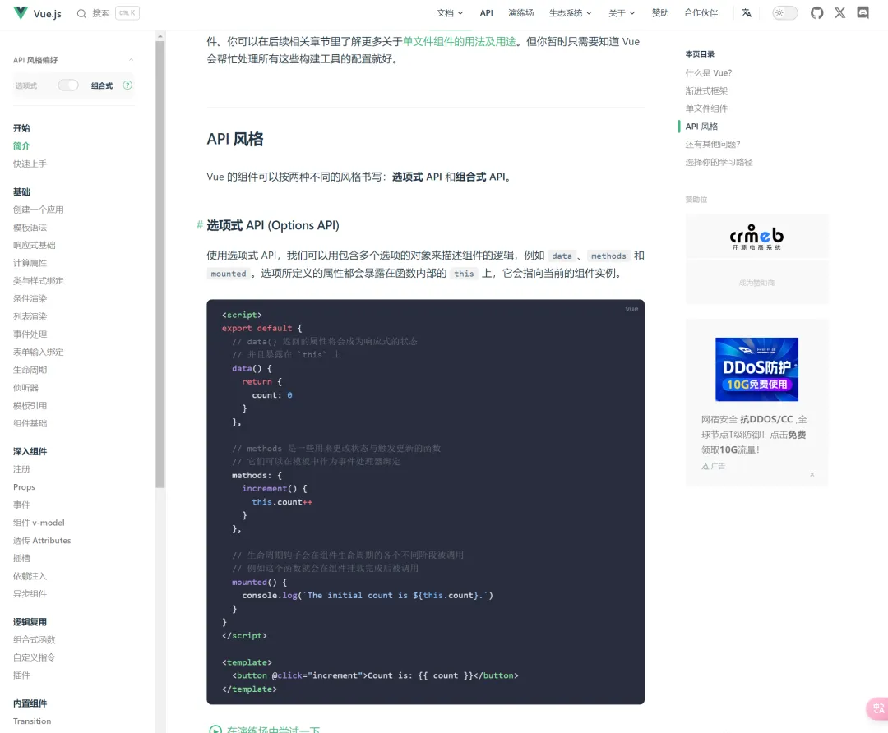Nuxt
官方出品的 SSR 框架，绝对是首选
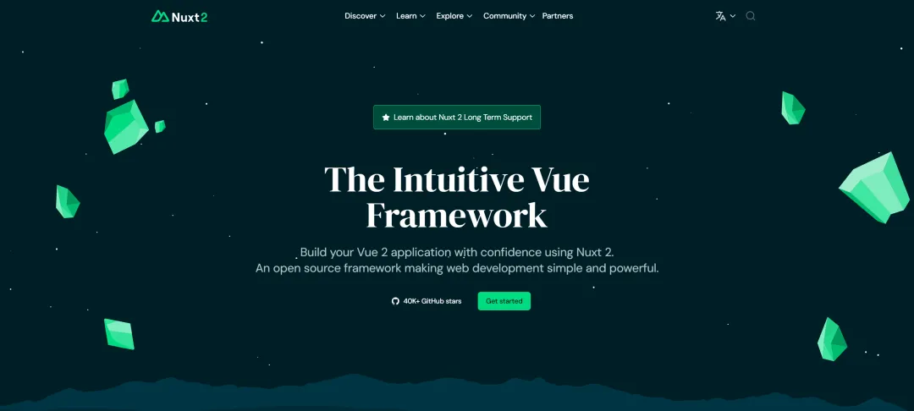Vite
现在 Vite 这个构建工具有多火不用我说了吧？相比于 Webpack，Vite 比较轻量，且开发阶段构建超级快，除非旧项目依赖 Webpack，不然新项目首选 Vite
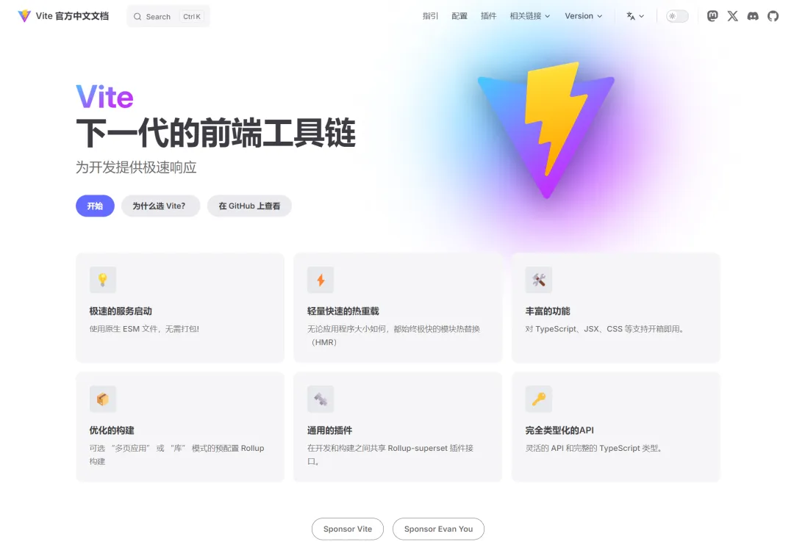PNPM
在包管理器的选择上，首选 PNPM，相比于 NPM，它能解决很多问题，例如幽灵依赖、安装速度快、节省空间、天然支持 Monorepo
Pinia
相比于老牌状态管理 Vuex，Pinia 更加小巧，使用起来也更加简单，对 Typescript 的支持也更好，并且所见即所得让开发者开发起来更加舒适
Pinia 也官方支持了持久化缓存的措施，非常方便，拓展性也更强
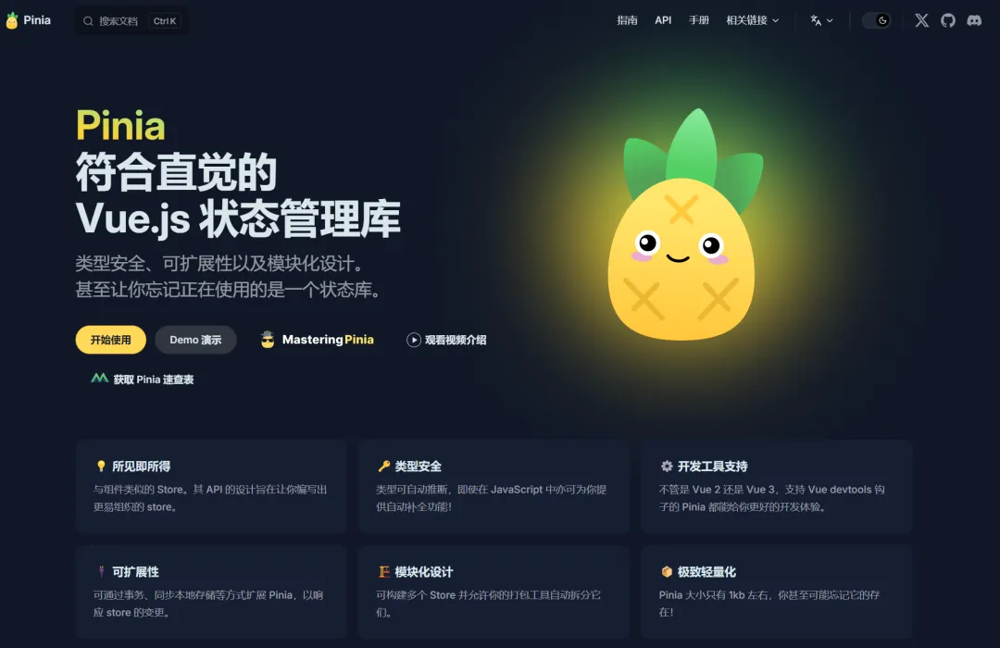Http 请求库
Axios 无疑是当今 Http 请求库的王者，无论是 Node 还是浏览器端，它都能很好地支持，且配置起来比较灵活，拓展性非常强，难怪下载量一直居高不下
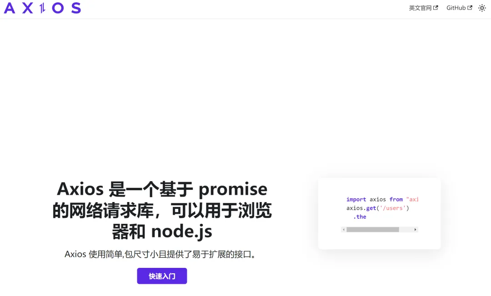 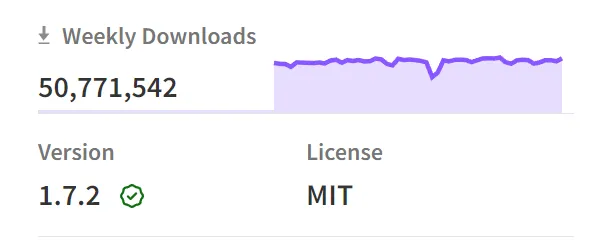UI 库
ElementUI & Antdv
其实 ElementUI 和 Antdv 这两个组件库都能满足大部分的 PC 端的网页开发，至于选择哪个就看个人审美了，这两个依旧占据着 Vue PC 端 UI 库的前二
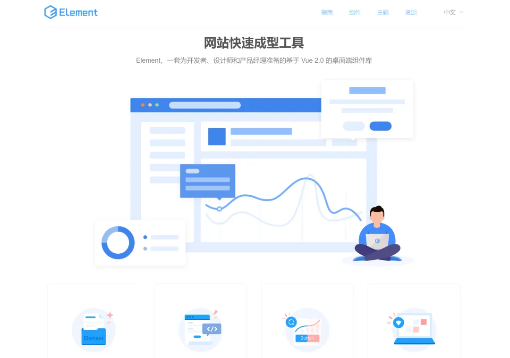 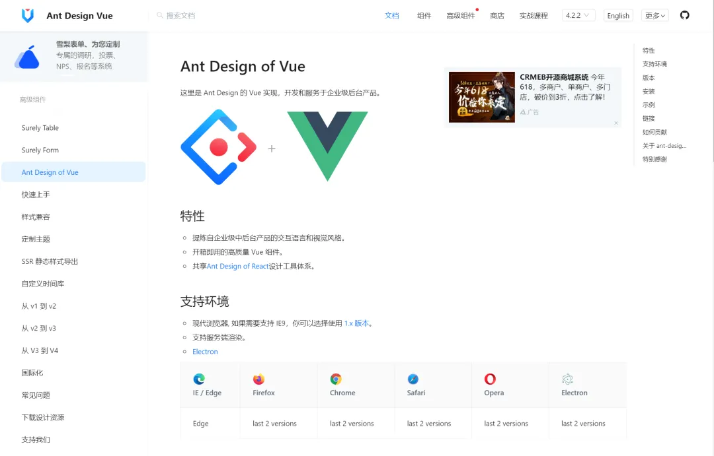Vuetify
Vuetify 中的每个组件都是在 Google Material Design 规范下制开发出来的，并附带数百个适合任何风格或设计的自定义选项；
Vuetify 支持多平台适配
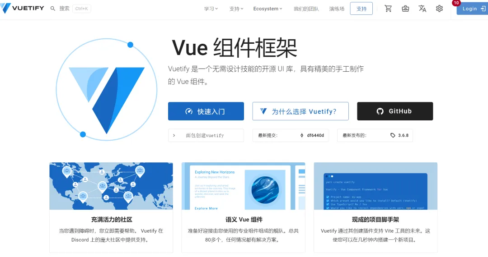Vant
Vant 是 Vue 移动端开发选择最多的 UI 库，且非常轻量~
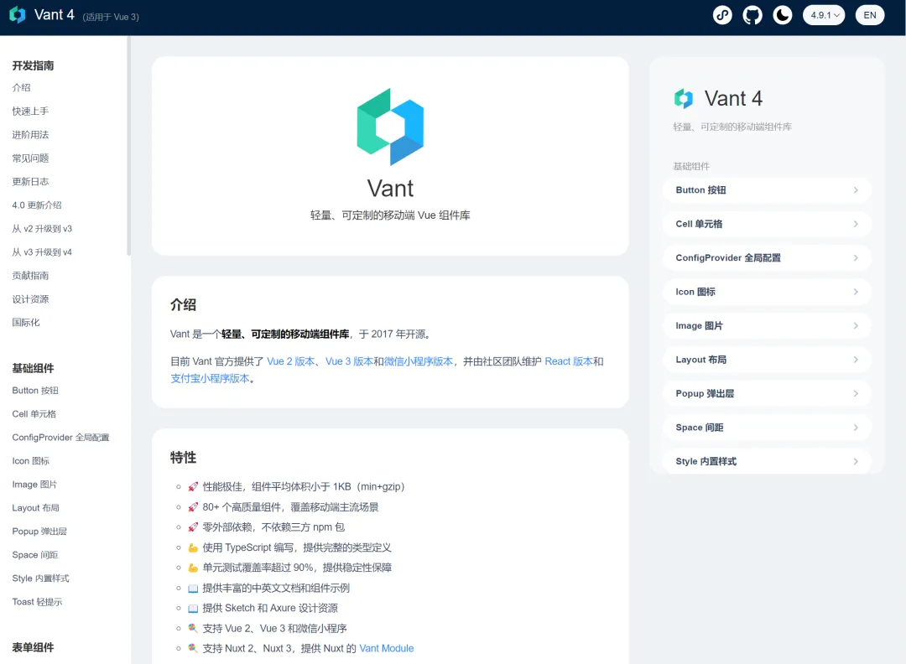表格组件
表格组件其实很多 UI 组件库都具备，但是毕竟他们精力有限，所以很多表格组件的质量都比较一般
Vxe-table
老牌表格组件库了，功能超级多，没有做不到的，只有你想不到的
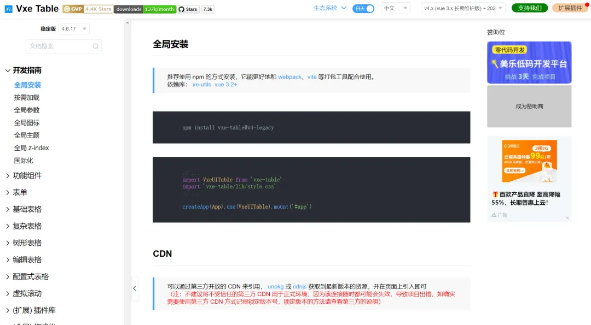vTable
字节开源的表格组件库，底层用 Canvas 实现的，天然支持虚拟滚动，性能不错
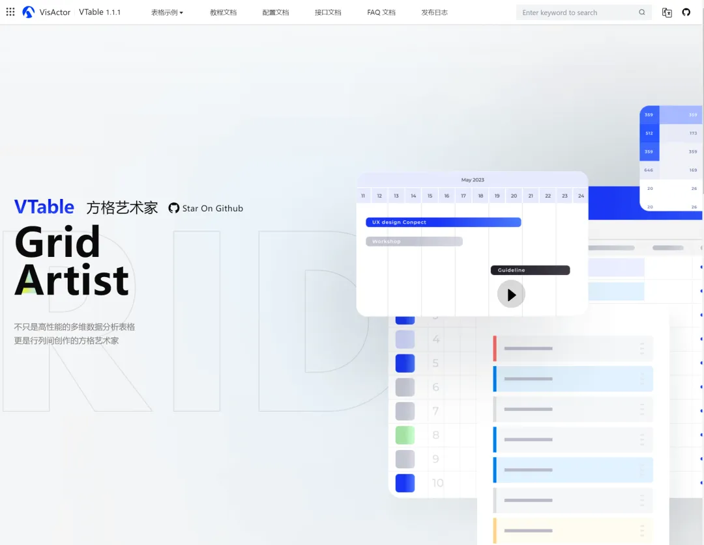Surely Vue
Antdv 自己研发的一款表格组件库，但是不开源需要收费，它的虚拟滚动做的很不错，跟其他表格都不一样
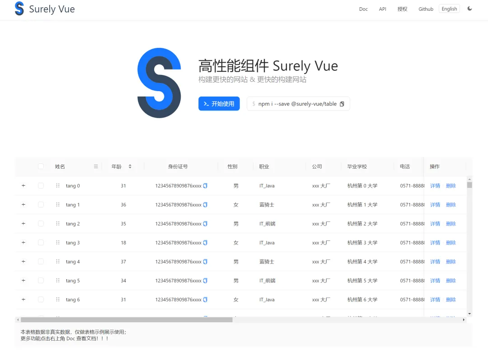Hooks 库
首选 Vueuse ，由 Vue 团队核心成员 Anthony Fu 开发，功能超级多，基本能满足你的开发需求
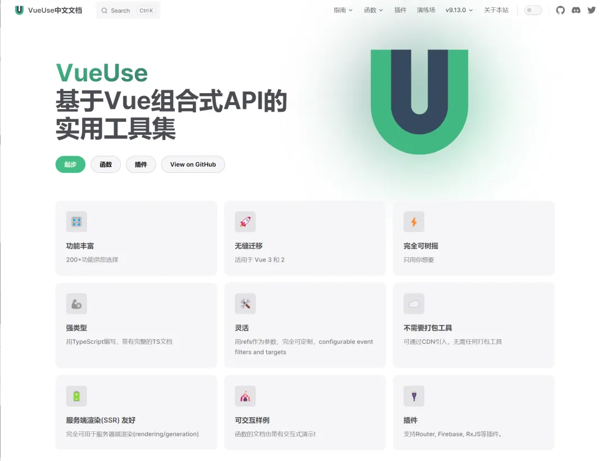拖拽库
其实 vue 的拖拽库已经断代很久了，上一个很火的是 vue-draggable，但是这个库很久没更新了，且只对 Vue2 支持的比较好
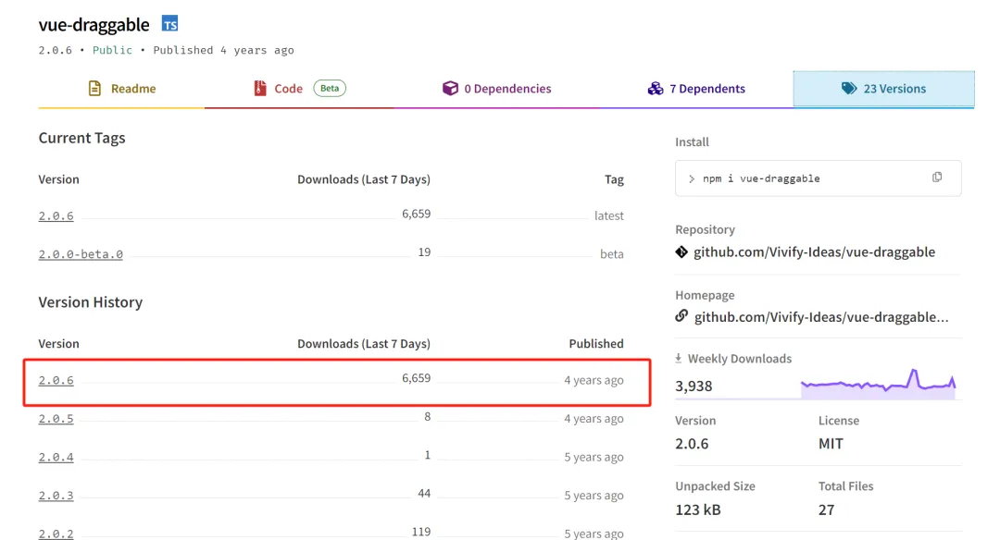所以现在推荐 vue3-dnd 这个库，对 Vue3 支持比较好，且具备基本的拖拉拽功能
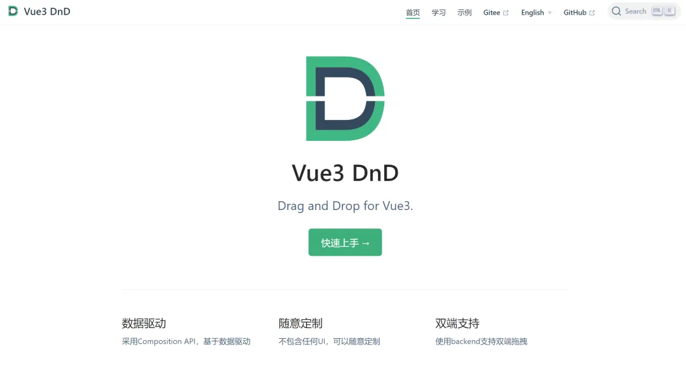I18N
在做国际化 I18N 的时候可以借助 vue-i18n 这个包来完成，使用起来很方便
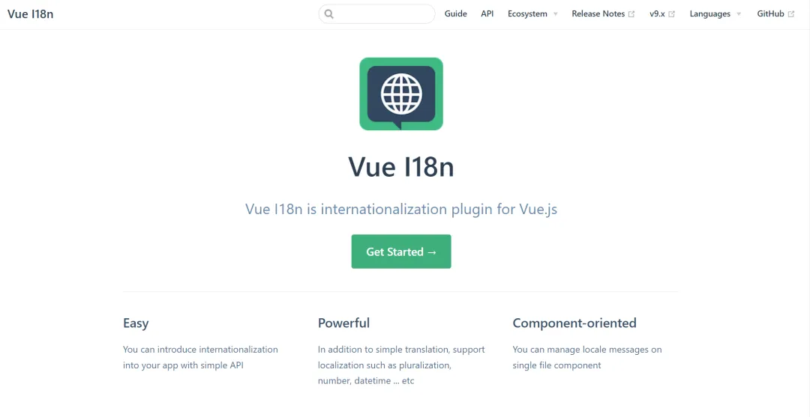站点生成器
Vitepress 借助 Vue3 和 Vite，能提供更好的开发体验和生产性能，以及更精美的默认主题